Already decided (v1.023, walkthrough 15d option B): things several sections use live in Settings — Classes and ranks becomes Settings’ second part, after Schools, each school’s classes and belt ranks with Add class; Color Belt keeps only what is testing’s own — the three prices, sparring gear and each class’s final award — in a tab. Joint plan with Dashboard core agreed: Color Belt builds it, Dashboard core reviews the Settings fit. Four questions of D6 are left; Question 1 is at the bottom. (Preview screenshots, fake data. The “after” is drawn on top of the real pages from the real class list; nothing in the app is built yet. Addresses are hidden in the pictures.)
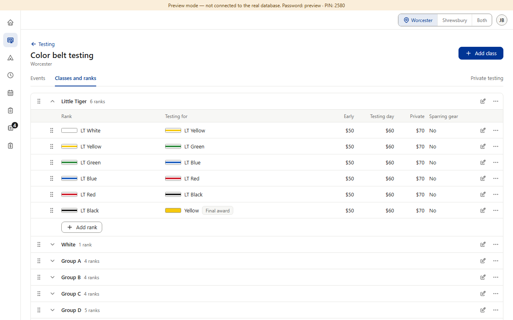
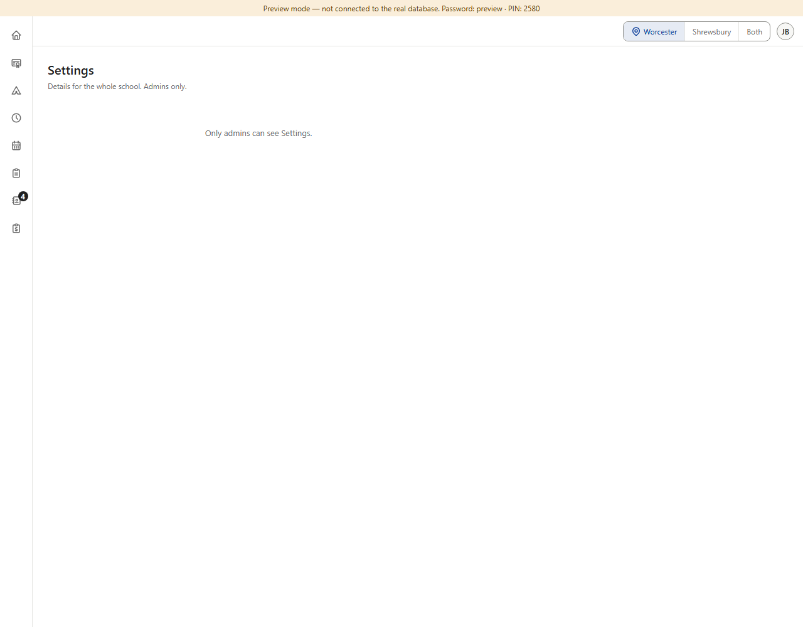
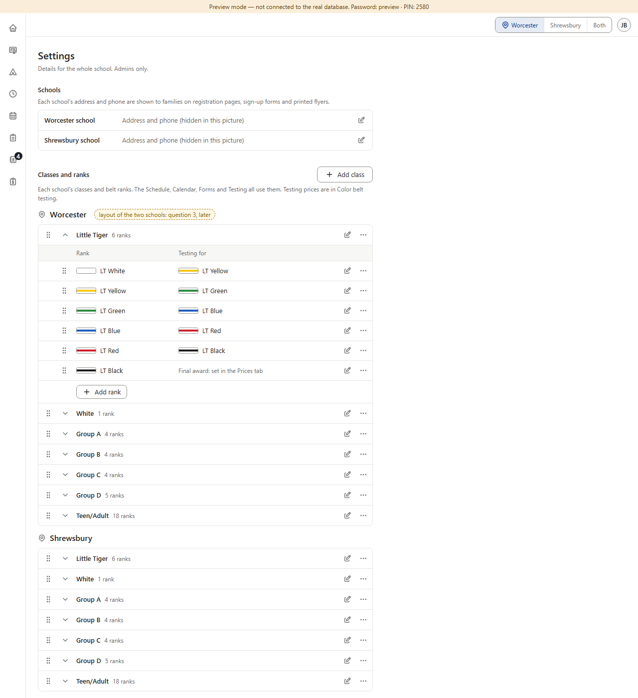
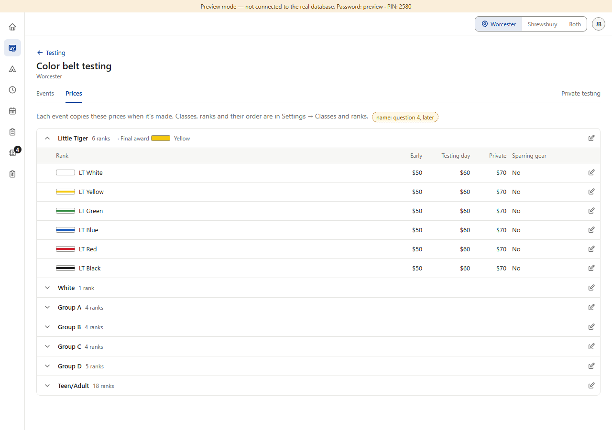
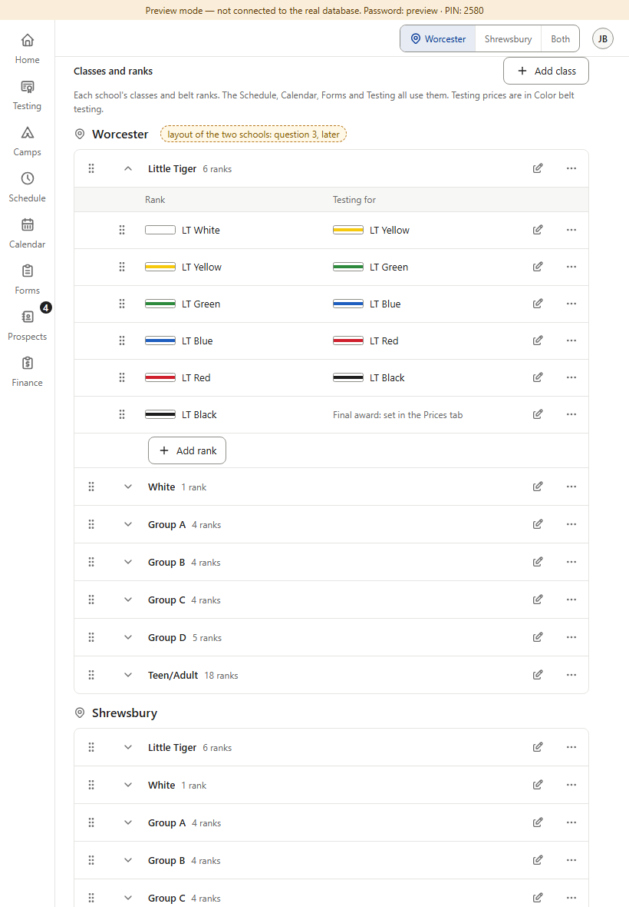
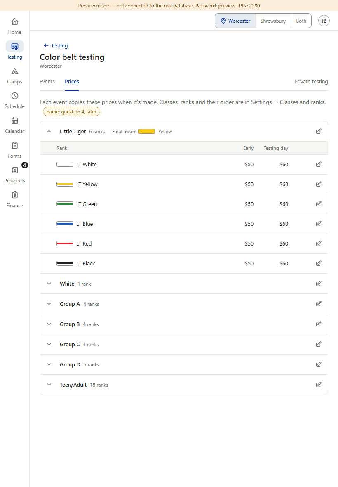
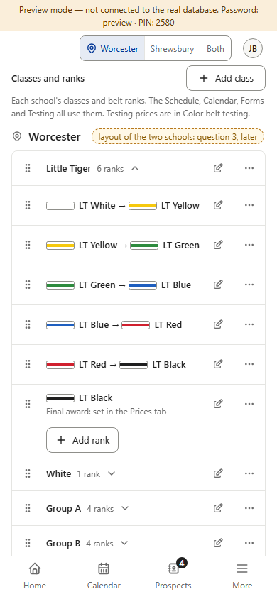
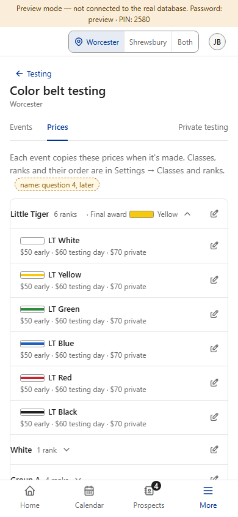
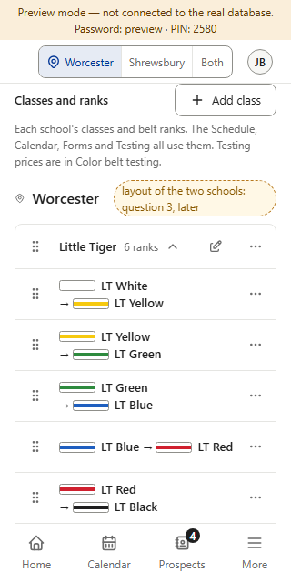
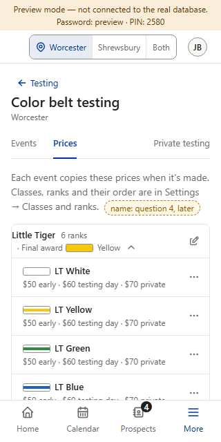
Today staff (and the shared desk sign-in) open Testing → Classes and ranks and read every class, rank and price, with “View only. Ask an admin to make changes.” (v1.021). After the move, the prices stay in Color Belt’s tab; only the class and belt list goes to Settings, which staff can’t open (they see “Only admins can see Settings.”). Day to day the desk needs the prices (a family asks what testing costs) — and the classes’ days and times are already in the Schedule, which staff can see.
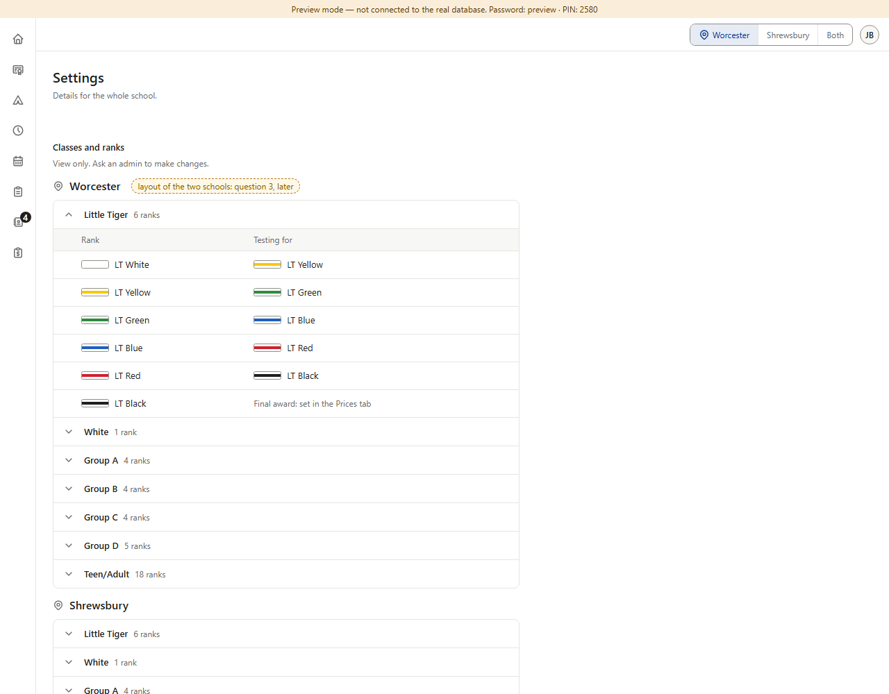
Staff keep everything they can read today, in its new place. − Settings stops being “admins only”: the account menu must show Settings to staff (that entry is Dashboard core’s change, in AccountMenu.jsx — M17 changes the menu too), and the page needs a staff version. − Two places to look for one school’s rank list (Settings for belts, Color Belt for prices).
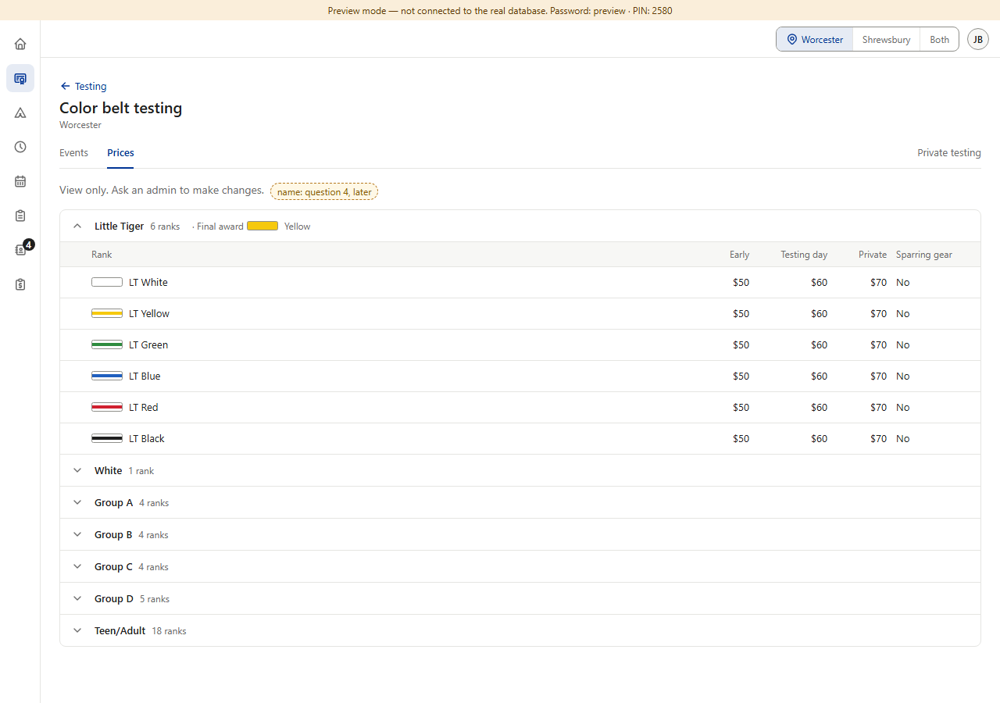
Recommended. The desk still sees what it uses — every class, rank, price and final award — in the place it already goes (Color belt testing). No account-menu change, no staff version of Settings, Settings keeps its one rule (admins only, v0.135). − Staff lose the “Testing for” column (which belt comes next); the belts are listed in order, and the event’s roster still shows it.
Not on this sheet: the Add / Edit class and Add / Edit rank dialogs split the same way (Settings keeps name, belt, order and next rank; the Prices tab’s edit keeps the prices, sparring gear and the final award) — drawn after the four answers. No database change is expected (same tables; admins already write them).
Answer Question 1 first (A or B).